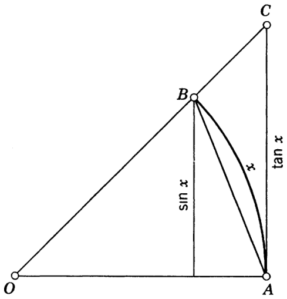

到目前为止，我们讨论的是数列的极限，也就是整数变量 n 的函数的极限。但极限概念也常常出现在另一种场合：函数 f(x) 对某个区间内的一切 x 都有定义。
如果在所有使 f(x) 有定义而又充分接近 ξ 的 x 处，f(x) 与 η 的差都可以任意小，就说当 x 趋于 ξ 时，函数 f(x) 的值趋于极限 η，¹ 记作
x→ξlimf(x)=η.更精确的定义如下。任意给定正数 ε，若总可以取一个足够小的区间 ∣x−ξ∣<δ，使得对既属于 f 的定义域又属于这个区间的每一个 x，都有 ∣f(x)−η∣<ε，那么 limx→ξf(x)=η。
原注 1 这里假设在任意接近 ξ 的地方，都有使 f 有定义的点。
函数极限与连续性有着密切的联系。如果 ξ 在 f 的定义域内，也就是说 f(ξ) 有定义，那么只要 limx→ξf(x) 存在，它的值就必须是 f(ξ)。事实上，按 η=limx→ξf(x) 的上述定义，对每个正数 ε，特别有 ∣f(ξ)−η∣<ε，从而 η=f(ξ)。现在对照极限与连续性的定义，便可看出，关系 limx→ξf(x)=f(ξ) 恰好表示 f 在点 ξ 连续。所以，当 ξ 属于 f 的定义域时，limx→ξf(x) 存在，恰好是说 f 在 ξ 连续。更一般地，如果 f 在 ξ 处还没有定义，但 limx→ξf(x) 存在且等于 η，就可令 f 在点 ξ 的值等于 η。这样补充以后的函数就在 ξ 处连续了（可去奇点，见第 35 页）。
译者注 这里须留意原书的约定。上一定义写的是 ∣x−ξ∣<δ，所以只要 f(ξ) 已经定义，检验时也要取 x=ξ。许多现代教材在函数极限的定义中写 0<∣x−ξ∣<δ，允许极限不同于该点的函数值。后文的差商本来在 x=ξ 处就无定义，两种约定在这种情形下给出相同的结果。
函数的极限还可以完全用数列的极限来描述。断言 limx→ξf(x)=η，就是说对每一个以 ξ 为极限的数列 xn，都有
n→∞limf(xn)=η（当然假设各 xn 都属于 f 的定义域）。事实上，若 limx→ξf(x)=η 且 limn→∞xn=ξ，则 x 只要充分接近 ξ，f(x) 就任意接近 η；而只要 n 足够大，xn 就已充分接近 ξ。所以 limn→∞f(xn)=η。反过来，若每当 xn→ξ 都有 limn→∞f(xn)=η，就必须有 limx→ξf(x)=η。否则存在一个固定的 ε>0，使得任意靠近 ξ 都还能找到满足 ∣f(x)−η∣≥ε 的 x。从中可选取一列趋于 ξ 的 xn，使 ∣f(xn)−η∣≥ε 对每项都成立，这样 f(xn) 就不可能趋于 η。
因此，f(x) 在点 ξ 的连续性意味着：定义域中的每个收敛于 ξ 的数列 xn 都满足 limn→∞f(xn)=f(ξ)。更一般地，若函数在一个区间内连续，则对定义域中任意收敛到该区间内某一点的数列，均有
n→∞limf(xn)=f(n→∞limxn).可见对连续函数而言，极限符号和函数符号可以交换次序。
函数的和、积与商的极限可按与数列相同的法则求得（见第 71 页）。若 limx→ξf(x)=η 和 limx→ξg(x)=ζ 存在，则
x→ξlim(f(x)+g(x))=η+ζ,x→ξlim(f(x)g(x))=ηζ.若 ζ=0，还有
x→ξlimg(x)f(x)=ζη.证明和数列情形一样。也可以把函数极限写成数列极限，直接从数列的相应法则推出。因此，若 ξ 属于 f 和 g 的定义域，而且 f(x),g(x) 都在 ξ 连续，那么它们的和、积、商也在 ξ 连续。对商，当然还要假设 g(ξ)=0。
在微分学里，ξ 不属于 f 定义域的情形特别重要。先看一个例子。对正整数 n，有
x→ξlimx−ξxn−ξn=nξn−1.函数 f(x)=(xn−ξn)/(x−ξ) 显然只在 x=ξ 时有定义。然而在 x=ξ 时，几何级数的求和公式给出代数恒等式
x−ξxn−ξn=xn−1+xn−2ξ+xn−3ξ2+⋯+ξn−1.求极限时，只须让 x 趋于 ξ，再用极限的运算法则计算右端即可。
下面的公式就不那么显然了：
x→0limxsinx=1.这里角 x 当然是以弧度计量的，如第 50 页所述。商 (sinx)/x 也只在 x=0 时有定义。如果在 x=0 时规定 (sinx)/x=1，就把它补成了一个在 x=0 处也连续的函数。这里用几何论证来证明这个极限公式。

图 1.47
由图 1.47，比较三角形 OAB、OAC 与单位圆扇形 OAB 的面积，¹ 可见当 0<x<π/2 时，
21sinx<21x<21tanx.由此，当 0<∣x∣<π/2 时，
1<sinxx<cosx1.因此 (sinx)/x 夹在 1 与 cosx 之间。我们知道，当 x→0 时，cosx 趋于 1，所以只要 x 足够接近 0，(sinx)/x 与 1 的差就可以任意小。这恰是要证的等式的意思。
原注 1（第 84 页） 当然，也可以一开始就用扇形 OAB 面积的两倍来定义角 x。
由刚证的结果可得
x→0limxtanx=x→0limxsinxx→0limcosx1=1,还有
x→0limx1−cosx=0.后一个极限可由下式得到。当 0<∣x∣<π/2 时，
x1−cosx=x(1+cosx)(1−cosx)(1+cosx)=x(1+cosx)1−cos2x=xsinx⋅1+cosx1⋅sinx.当 x→0 时，右端的三个因子分别趋于 1、21 和 0。乘积便趋于 0，如所要证明的那样。再将同一公式除以 x，得到
x21−cosx=(xsinx)21+cosx1,从而
x→0limx21−cosx=21.当 x→∞ 时的极限。 最后指出，同样可以考察连续变量 x 无限增大时的极限过程。例如，等式
x→∞limx2−1x2+1=x→∞lim1−1/x21+1/x2=1的意思很清楚：只要 x 足够大，左边的函数值与 1 的差就可任意小。对和、积、商求这类极限，运算法则和前面相同。
* 还有一个结果在计算极限时经常有用，即求复合函数极限的法则。对于使 x=g(z) 落在 f(x) 的定义域中的那些 z，复合函数 f(g(z)) 有定义。g(z) 可以是连续变量的函数，也可以是整数变量的函数；这里的 f(x) 则应是连续变量的函数。
若 limz→ζg(z)=ξ，ξ 落在 f 定义域的一个开区间内，且 limx→ξf(x)=η，那么 limz→ζf(g(z))=η。于是得到一个推论：两个连续函数的复合仍然连续（第 55 页已提过）。
理由很清楚。要使 f(x) 任意接近 η，只须使 x 充分接近 ξ；而要使 x=g(z) 充分接近 ξ，只须使 z 充分接近 ζ。稍加改动，当其中某个变量允许无限增大时，相同的论断也适用。
a. 关于初等函数的几点说明
到目前为止，我们一直默认初等函数连续。证明这一点很简单。首先，函数 f(x)=x 连续，因此 x2=x⋅x 作为两个连续函数的积也连续，同理 x 的每个正整数次幂都连续。多项式是连续函数之和，因而都连续。有理函数是连续函数的商，因此在分母不为零的每个区间上都连续。
函数 xn 在 x≥0 上连续且单调，故作为它的反函数，n 次根函数也连续。由此容易推出，在有理函数的分母不为零且所取实根有定义之处，它的 n 次根是连续的。
用已经建立的概念，也可以证明三角函数的连续性。此处略过这一讨论，因为第二章（第 166 页）中我们将看到，这些函数的连续性都可由它们的可微性直接推出。
对于指数函数 ax、一般幂函数 xα 和对数的定义及连续性，我们只作几点说明。和第 1.3 节（第 51 页）一样，设 a 是一个正数，譬如大于 1，r=p/q 是一个正有理数（p,q 为整数）。于是 ar=ap/q 是 q 次幂等于 ap 的那个正数。设 α 是任意无理数，r1,r2,…,rm,… 是一列趋于 α 的有理数。我们断言 limm→∞arm 存在，并把这个极限叫作 aα。
用柯西准则来证明极限存在，只须说明当 n,m 足够大时，∣arn−arm∣ 就可任意小。例如设 rn>rm，即 rn−rm=δ，其中 δ>0。则
arn−arm=arm(aδ−1).由于 rm 收敛于 α，它们有界，故 arm 也有界。因此，只需说明当 n,m 足够大时，∣aδ−1∣=aδ−1 可以任意小。只要这两个下标足够大，有理数 δ 确实可以小到任意程度。所以，给定任意大的正整数 l，只要 n,m 充分大，就有 δ<1/l。由 δ<1/l 及 a>1，可得¹
1<aδ<a1/l.而当 l 趋于无穷大时，a1/l 趋于 1（参见第 64 页），所需的结论便立即得到。
原注 1（第 87 页） 这里用到了如下事实：若 a>1 且 m/n 为正，则 am/n>1。因为 (a1/n)m 是 m 个大于 1 的因子的乘积，故也大于 1。
这样把 ax 的定义扩展到无理数 x 之后，可以证明它到处连续，而且单调。对负的 x，自然用下式来定义：
ax=a−x1.当 x 从 −∞ 变到 +∞ 时，ax 取遍零与 +∞ 之间的一切值。因此它有连续且单调的反函数，我们称之为以 a 为底的对数。类似地，也能证明：若 α 是任意固定的有理数或无理数，当 x 在 0<x<∞ 内变动时，一般幂函数 xα 是 x 的连续函数；若 α=0，它还单调。
这里勾勒的是指数函数、对数与幂函数 xα 的“初等”处理方法。到第 149 页，我们会代之以另一种在原理上要简单得多的讲法。